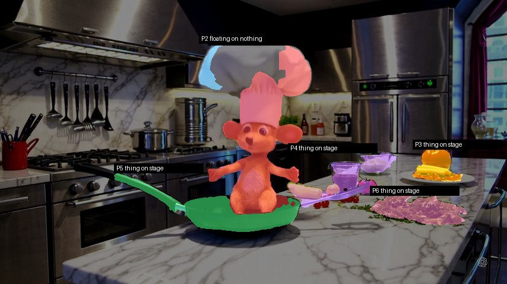
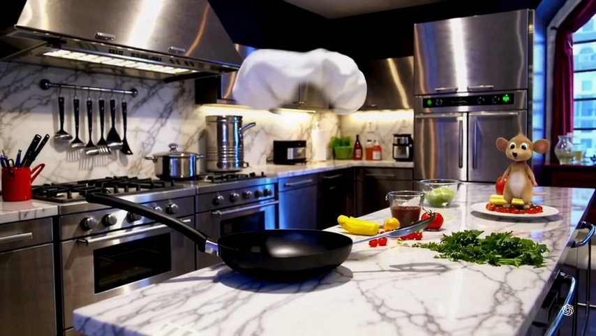
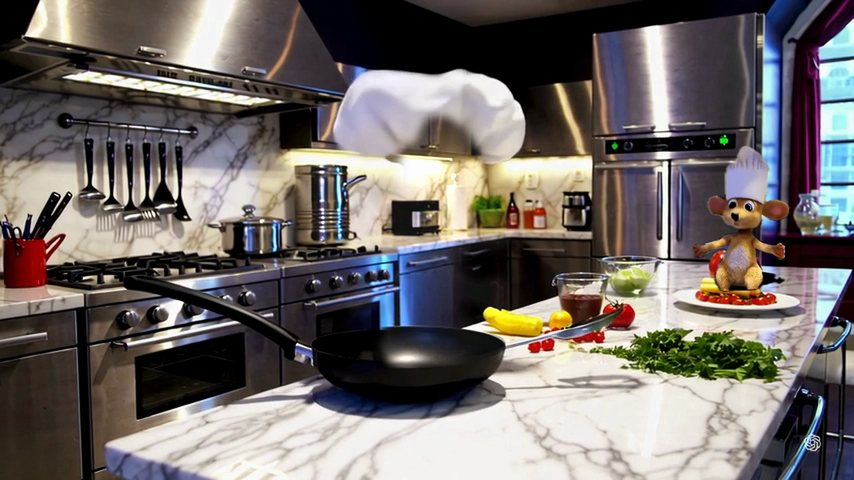
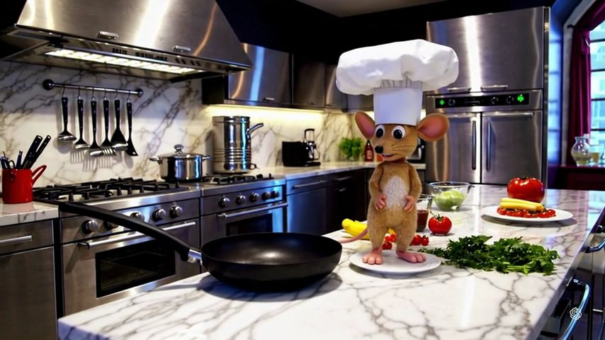

First test
The Mouse Jump
A Sora clip of a mouse chef in a frying pan. The ask: jump 14 cm high onto the tomato plate and land at 1.33 s. Prompts never got there. One take guided by AM's numbers landed 3 px from AM's spot.
3 pxlanding distance from AM's spot, at 1.29 s (asked 1.33 s)
3.7 pxmedian distance from AM's path over all 97 frames
0 of 11prompt-only takes that landed where asked
14 of 30numbers AM's core reasoner ruled with proof on this clip; the camera CANNOT
The request

"Jump 14 cm high, out of the pan, onto the tomato plate."
- Mouse
- 104 cm from the camera, 9 × 14.6 cm, sitting in the pan
- Plate
- 174 cm away, 72 cm to the right
- Counter
- the camera 27.7 cm above it, tilted 3.8° down; fitted to 0.63 cm
- Lens
- 60° wide (stated), f = 740 px
- AM's core
- 14 of 30 numbers ruled; the mouse's own motion and the camera CANNOT (Sora's wobble), so the jump starts from the measured last frame
The jump as exact math
s = (k − 24) / 8 take-off at 1.0 s, 8 frames in the air (0.333 s at 24 fps)
X, Z: a straight line from the pan to the plate
height above that line: 4 · Hap · s(1 − s), Hap = g·T²/8 = 13.6 cm (g = 981 cm/s²)
→ the same fall every airborne frame: gravity, exactly
size on screen = f · H / Z (perspective)
The takes
LANDS
FLUX 3 Edit · repaints AM's guide video

lands 3 px from AM's spotat 1.29 s (asked 1.33 s)median 3.7 px from AM's path, 97 framessize 0.95×735 credits, about $0.15
AM'S GUIDE
AM's numbers drawn as the guide

the mouse's own pixels, moved to AM's place and size at every frameabout 4 s on the Mac
STOPS SHORT
Veo 3.1 Lite · normal prompt

never reaches the plate727 credits, about $0.15
All routes
| Route | Takes | Result | Cost |
|---|---|---|---|
| Prompts only: plain words, tuned words, AM's numbers written as text | 11 | 0 exact; the mouse stays in its own depth plane | $0.87 for the 6 plate takes |
| Veo 3.1 Lite with AM's end frame | 1 each | pan landing 3.7 px off; plate landing 4 px off but a second late | 727 credits a take |
| AM's guide + FLUX 3 Edit | 1 | 3 px at landing, on time to 0.04 s | 735 credits, about $0.15 |
AM's own part, the 3D map, the guide and the end frame, took about 290 s on the Mac the first time: about $0.0024, no tokens.
Corrections since the first write-up
- The jump equation and the guide drawing were written during the test from AM's measurements. AM's core reasoner answered CANNOT on the clip's own motion, so no rule of its went into the jump.
- The chef's hat floating in the FLUX take came from the guide's background picture, which still held the hat; Apple Vision's mask had missed its top. It was not the model's doing. AM's board of the FLUX take showed the hat 36.6 cm above the counter resting on nothing, which led to the fix.
- A cleaner guide for this shot, with the whole mouse and hat moving, was blocked by FLUX three times ("may violate our Terms of Service"; not charged). The chess test was run instead.